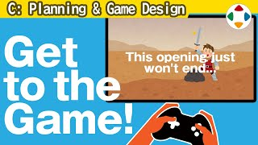
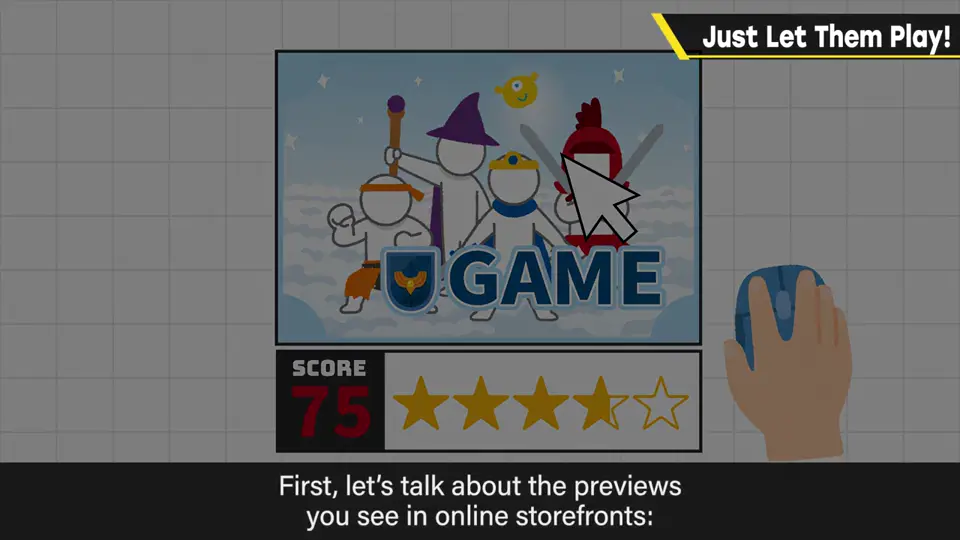
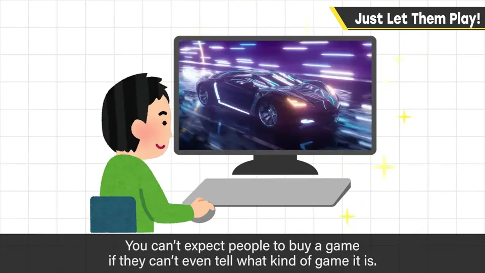
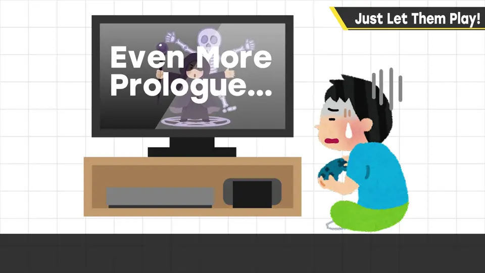
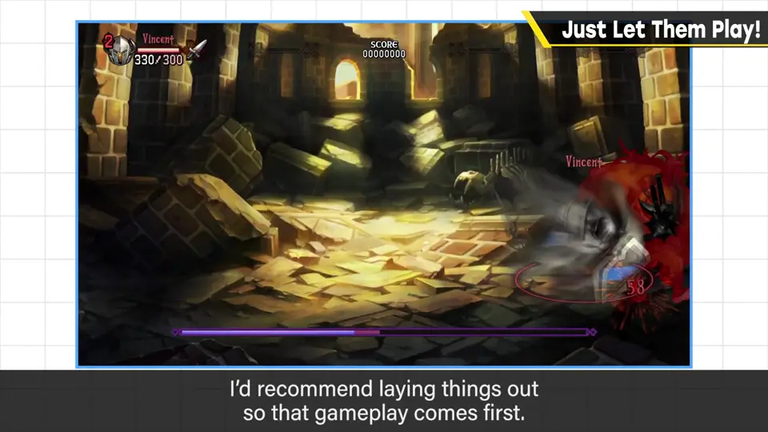
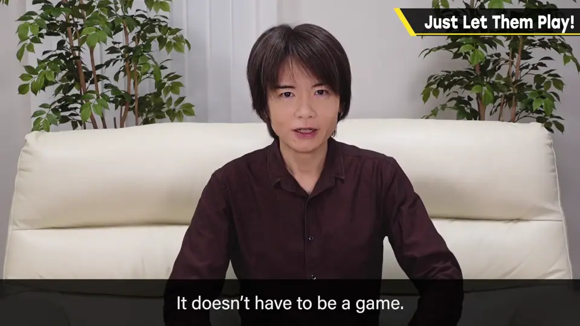

速览
这是街机游戏式的思考：游戏必须让人在玩的最初 3 分钟明白它的乐趣——总之先玩、判断有没有趣，让人等更久就会被放弃。先说网店里作为预览排列的游戏预告片：很多一开始放故事演出、迟迟不展示游戏画面，樱井都养成了跳过开头的习惯。精良的 CG 影像和片头可以先放一放，不知道是什么样的游戏就没法买。游戏内容也一样：一开始有序章、迟迟玩不到，慢热的游戏在这点上吃亏。为了干脆地回答「游戏到底什么感觉」，最好不管铺垫，尽早切进游戏。当然影像有趣时感想会不同，RPG 等也确实需要导入部分，但推荐总之先让玩家玩的流程：比如发生事件、不得不出发时，把时间线上靠后的部分放到开头先玩；或演出成主角之前的某人在战斗，迅速进入游戏。视作品而定，系统已为人熟知的作品、以影像演出或故事见长的作品等，想展示的地方应受控。但看影像的事其他影像作品也能做，不必是游戏——所以先让人品尝只有游戏才能享受的部分。教程也最好不像练习，而像在玩正篇（另题再谈）。
1. 最初 3 分钟 0:02
这是街机游戏制作式的思考：游戏必须在玩的最初 3 分钟让人明白它的乐趣。总之玩一下，判断有趣与否；让人等得更久，就会被放弃。

2. 预告片与序章 0:26
- 网店预览中的游戏预告片，很多一开始是故事演出，迟迟不展示游戏画面——樱井已经养成了跳过开头的习惯。
- 精良的 CG 影像、片头可以先放一边；不知道是什么样的游戏，就没法买。
- 游戏内容也一样：一开始插入序章、迟迟玩不到——慢热的游戏在这点上吃亏。


3. 总之先让玩家玩 1:12
当然，影像本身有趣时会有不同的感想；RPG 等也确实需要导入部分。但樱井推荐总之先让玩家玩的流程：
- 发生事件、不得不出发时，把时间线上靠后的部分放到开头先玩；
- 演出成主角之前的某人在战斗，迅速把玩家带进游戏。


视作品而定：系统已为人熟知的作品、影像演出或故事特别突出的作品等，想展示的地方应受到控制。但看影像这件事别的影像作品也能做，不必是游戏。
自测题
1. 为什么樱井强调「最初 3 分钟」？
玩家总之先玩、判断有趣与否；让人等更久就会被放弃（街机游戏式的思考）。 0:02
2. 樱井对预告片和序章有什么意见？
很多预告片先放故事演出、迟迟不展示游戏画面——不知道是什么游戏就没法买；游戏开头的长序章也让慢热游戏吃亏，应尽早切进游戏。 0:26
3. 需要导入的游戏，如何仍然「先让玩家玩」？
把时间线上靠后的部分放到开头先玩，或演出成主角之前的某人在战斗，迅速进入游戏。 1:30